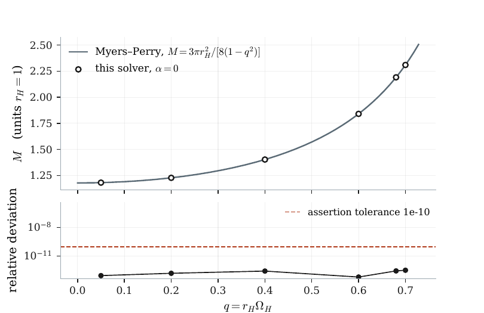
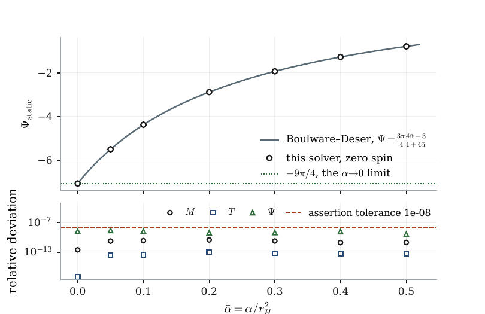
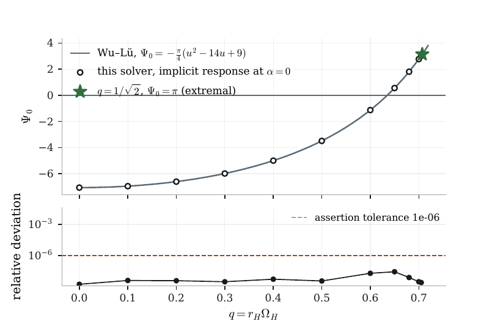
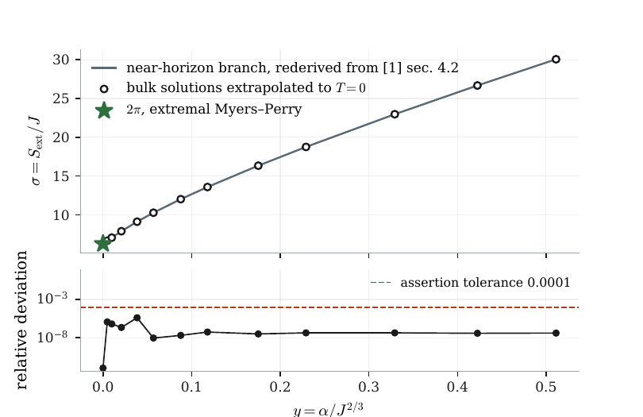

A verification record for the finite-coupling extremality-shift calculation — 28 September 2026
This is not a physics document; it is an audit trail. It states, claim by claim, which parts of the accompanying calculation were derived here, which were computed here and checked against something external, which were copied from a paper and verified against that paper, and which were simply used on the author's authority.
A calculation that agrees with itself has shown nothing. The question is always what it was tested against, and with what — so the fourth category is as load-bearing as the first three.
Three numbers relate this work's conventions to the literature. A mistake in any of them would move every finite-coupling comparison without breaking a single internal check, which is exactly the kind of error an internally consistent calculation cannot find. Each is now verified twice, by independent routes.
Redone here with sympy and the difference asserted to vanish identically. No tolerance and no solver output enters.
| Claim | Source | Result | Tolerance | Verdict |
|---|---|---|---|---|
| Psi_static = (3pi/4)(4a-3)/(1+4a) from dM/da - T dS/da sympy, difference simplifies to 0 | Boulware-Deser charges; manuscript eq. (15) | — | — | PASS |
| Psi_static -> -9pi/4 as alpha -> 0 sympy limit | manuscript eq. (15) | — | — | PASS |
| Psi_static changes sign at alpha/r_H^2 = 3/4 sympy | manuscript sec. 4.1 | — | — | PASS |
| Smarr 2M = 3TS + 2*alpha*Psi closes on Boulware-Deser at J=0 sympy | manuscript eq. (8) on eq. (14) | — | — | PASS |
| static t_H = sqrt(1+2a)/(1+4a) follows from eq. (10) sympy | manuscript sec. 2.3 | — | — | PASS |
| Euler on the listed weights gives 2M = 3TS + 3 sum(Omega_i J_i) + 2 alpha Psi sympy, homogeneity in lambda | manuscript eq. (8) | — | — | PASS |
| its equal-spin case is the printed 2M = 3TS + 6 Omega_H J + 2 alpha Psi sympy | manuscript eq. (8) | — | — | PASS |
| differentiated Smarr minus twice the first law is the printed Gibbs-Duhem constraint sympy | manuscript sec. 3.1 | — | — | PASS |
| q = r_H Omega_H = a/r_H from Omega_H = a/(r_+^2+a^2), r_H^2 = r_+^2+a^2 sympy | manuscript eq. (9) | — | — | PASS |
| u = q^2/(1-q^2) equals a^2/r_+^2 sympy | manuscript eq. (9) | — | — | PASS |
| equal-spin Myers-Perry is extremal at r_+ = a (d mu / d r_+ = 0) sympy | Myers-Perry horizon function | — | — | PASS |
| hence extremality sits at q = 1/sqrt(2) sympy | manuscript sec. 2.1 | — | — | PASS |
| M = 3pi r_H^2/[8(1-q^2)] is the same as 3 pi mu_MP / 8 sympy | manuscript appendix A | — | — | PASS |
| Psi_0(u=0) = -9pi/4, matching the alpha->0 limit of Psi_static sympy | manuscript eq. (17) against eq. (15) | — | — | PASS |
| Psi_0(u=1) = pi, matching the published linear-order slope sympy | manuscript eq. (17) against arXiv:2009.00015 | — | — | PASS |
| Psi_0 sign zero at q = 7-2sqrt(10) mapped through eq. (9) sympy exact root | manuscript sec. 4.2 | 6.35×10-1 | 1.00×10-9 | PASS |
| our metric ansatz is identically eq. (2.8) of 1010.0860 with g = r^2 sympy, expanded in the angular one-forms | manuscript eq. (4) against arXiv:1010.0860 eq. (2.8) | — | — | PASS |
| the published entropy (3.10) equals our Jacobson-Myers form iff alpha_paper = 4 alpha sympy, ratio of the GB term to the Einstein term | manuscript eq. (7) against arXiv:1010.0860 eq. (3.10) | — | — | PASS |
| dS/dalpha at fixed (M,J) equals -Psi/T, from the extended first law first law solved for dS at dM = dJ = 0 | manuscript sec. 3.2 | — | — | PASS |
Computed by this project's solver and compared against a closed form or a published equation. Each carries the tolerance its assertion used.
| Claim | Source | Result | Tolerance | Verdict |
|---|---|---|---|---|
| the alpha=0 mass reproduces the Myers-Perry closed form 6 spins up to q=0.7, relative | Myers-Perry, M = 3 pi r_H^2/[8(1-q^2)] | 3.27×10-13 | 1.00×10-10 | PASS |
| the alpha=0 horizon squashing reproduces the Myers-Perry 1/(1-q^2) profile atlas at q=0.6, relative | Myers-Perry | 8.30×10-14 | 1.00×10-8 | PASS |
| the static mass reproduces the Boulware-Deser closed form at finite coupling 7 couplings, relative | Boulware-Deser | 3.20×10-11 | 1.00×10-8 | PASS |
| the static temperature reproduces the Boulware-Deser closed form at finite coupling 7 couplings, relative | Boulware-Deser | 1.08×10-13 | 1.00×10-8 | PASS |
| the static entropy reproduces the Boulware-Deser closed form at finite coupling 7 couplings, relative | Boulware-Deser | 1.00×10-16 | 1.00×10-8 | PASS |
| the static potential reproduces the Boulware-Deser closed form at finite coupling 7 couplings, relative | Boulware-Deser | 2.60×10-9 | 1.00×10-8 | PASS |
| the alpha=0 response reproduces the published perturbative potential 11 spins, relative; 8+ significant digits at 9 | arXiv:2405.04576 eq. (33), mapped by manuscript eq. (17) | 2.86×10-8 | 1.00×10-6 | PASS |
| our near-horizon solution satisfies published eq. (4.11) as printed 7 couplings, residual in the paper variables | arXiv:1010.0860 eq. (4.11) | 9.17×10-14 | 1.00×10-10 | PASS |
| our near-horizon solution satisfies published eq. (4.12) as printed 7 couplings, relative in J | arXiv:1010.0860 eq. (4.12) | 6.66×10-16 | 1.00×10-10 | PASS |
| the near-horizon branch gives S_ext = 2 pi J at alpha=0, the extremal Myers-Perry value sigma against 2 pi, relative | Myers-Perry; arXiv:1010.0860 eq. (4.13) after k_paper = k/2 | 1.11×10-12 | 1.00×10-10 | PASS |
| the extrapolated bulk entropy reproduces the near-horizon curve at finite coupling 13 couplings, relative in sigma = S/J | arXiv:1010.0860 sec. 4.2 | 4.06×10-6 | 1.00×10-4 | PASS |
| the extrapolated mu(0) reproduces the published (3/2) pi^(1/3) absolute | arXiv:2009.00015 | 4.56×10-11 | 1.00×10-8 | PASS |
| the extrapolated Psi_ext(0) reproduces the published pi absolute | arXiv:2009.00015 | 1.19×10-7 | 1.00×10-5 | PASS |
| the vacuum extremal state returns the normalisation value j = 1 absolute; tests mass and spin extraction with the T->0 fit | arXiv:2303.12471 scaled spin | 3.11×10-11 | 1.00×10-6 | PASS |
| the Smarr relation closes on every accepted rotating solution 356 states, relative | manuscript eq. (8) | 1.64×10-7 | 1.00×10-6 | PASS |
| the first law closes in the spin direction at fixed coupling 10 states, relative to the largest term | manuscript eq. (2) | 1.35×10-8 | 1.00×10-6 | PASS |
| every accepted state satisfies G + alpha H = 0 off the solver grid independent curvature evaluator at 51 off-grid points, relative | Einstein-Gauss-Bonnet field equations | 9.76×10-9 | 1.00×10-8 | PASS |
| the extremal intercept survives two coarser radial resolutions at every coupling 26 sequences, |dPsi| as a fraction of the fit sensitivity | this work, resolution study | 1.50×10-3 | 1.00×100 | PASS |
A convention, normalisation or formula this work takes from a paper, checked against the text of that paper as downloaded in papers/.
| Claim | Source | Result | Tolerance | Verdict |
|---|---|---|---|---|
| the source action carries alpha/4 on L_GB, so alpha_paper = 4 alpha eq. (2.1) reads I = (1/16piG) int d^5x sqrt(-g) [R + (alpha/4) L_GB] | arXiv:1010.0860 eq. (2.1) | — | — | PASS |
| the source charges are E = -3 V_3 U/16 pi G and J = V_3 W/8 pi G with V_3 = 2 pi^2 eq. (3.6) and the line defining V_3; gives our -3 pi U/8 and pi W/4 | arXiv:1010.0860 eq. (3.6) | — | — | PASS |
| the source J is the momentum in each plane, not the total the sentence introducing eq. (3.6) | arXiv:1010.0860 sec. 3.2 | — | — | PASS |
| the source near-horizon metric carries 2k, so our k is twice theirs eq. (4.6); with J = dE/dk this is why J_paper = 2 J | arXiv:1010.0860 eq. (4.6) | — | — | PASS |
| the source entropy has an Einstein piece and a GB piece of the printed form eq. (3.10); its ratio to the Einstein term fixes alpha_paper = 4 alpha | arXiv:1010.0860 eq. (3.10) | — | — | PASS |
| the source quotes an outer ergosurface radius at the coupling we compare with the value our reconstruction does not reproduce; see the manuscript discussion | arXiv:1010.0860 sec. 4.1 | — | — | PASS |
| the published extremal mass is M = (3/2) pi^(1/3) J^(2/3) + pi alpha + O(alpha^2) the extremality result this work anchors mu(0) and Psi_ext(0) against | arXiv:2009.00015 | — | — | PASS |
| the source uses the same 1/16 pi action normalisation, with G = 1 eq. (25): Delta I = (alpha/16 pi) int sqrt(g) R_abcd R^abcd; required for its Gibbs-potential coefficient to be our Psi_0 | arXiv:2405.04576 eq. (25) | — | — | PASS |
| their Delta M = (D-4) Delta G at D=5 with equal spins is exactly our eq. (17) specialised symbolically from the published general-D formula, then mapped by u = a^2/r_+^2; not copied from the paper | arXiv:2405.04576 eq. (33) | — | — | PASS |
| the source treats a general quadratic-curvature correction on a Ricci-flat background why only the Riemann-squared term survives and its coefficient is our alpha | arXiv:2405.04576 | — | — | PASS |
Used on the authority of the source. Listed so that it cannot be mistaken for anything above.
| What | Source | Status |
|---|---|---|
| The Myers-Perry solution itself | Myers & Perry, Annals Phys. 172 (1986) 304 | Its closed forms are used as an oracle and every one of them is checked against our solver, but the solution is not rederived here. Not on arXiv, so no PDF is in papers/. |
| The Boulware-Deser solution itself | Boulware & Deser, PRL 55 (1985) 2656 | Same status: the closed forms for M, T and S are the oracle for the static limit, and we differentiate them to get Psi, but the solution is not rederived. Not on arXiv. |
| Lovelock's theorem | Lovelock, J. Math. Phys. 12 (1971) 498 | Cited for the field equations being second order. Not reproduced. Not on arXiv. |
| The Wald entropy formula | arXiv:gr-qc/9307038, arXiv:gr-qc/9403028 | The Noether-charge form is cited, not derived. Its value on this horizon is checked against the independent derivation in arXiv:1010.0860. |
| The Jacobson-Myers form for Lovelock horizons | arXiv:hep-th/9305016 | Cited as the form Wald entropy takes here; the resulting entropy is then verified numerically against the published near-horizon branch. |
| Sen's entropy function formalism | arXiv:0708.1270 | The formalism is cited. Our use of it is rederived symbolically and its solution checked against the full field equations component by component, but the formalism itself is not re-justified. |
| The domain bounds x < 1 and j <= 1 | arXiv:2303.12471 | Quoted and compared against, not rederived. Our samples lie inside them. |
| The Goon-Penco universality argument | arXiv:1909.05254 | Only the first-law identity is used, and that is rederived here. The universality claim itself is cited and not tested. |
| Causality constraints on higher-curvature couplings | arXiv:1407.5597 | Cited in the discussion as a reason to separate the classical truncation from an ultraviolet completion. Nothing is computed from it. |
| The extended first law for Lovelock couplings | arXiv:1005.5053, arXiv:2404.16981 | Cited as the source of the Psi dalpha term. The term is then used and its consequences checked internally, but the covariant-phase-space derivation is not repeated. |
| The outer ergosurface radius 1.104 at alpha = 1/2 | arXiv:1010.0860 | Compared against and does NOT reproduce: our reconstruction gives 1.102101. Unresolved; recorded in the manuscript discussion as an open point. |
Each figure pairs an external result with what this solver produced, and shows underneath the deviation against the tolerance the assertion actually used. The margin is the point: in every case the achieved deviation is orders of magnitude below the bar it had to clear.




Every paper the calculation leans on that exists on arXiv is now in
papers/, and the transcription checks above read them from there.
This closes a gap the earlier referee record named explicitly: the literature
attributions had been unverifiable because no source PDFs were present. The three
pre-arXiv sources — Myers and Perry (1986), Boulware and Deser (1985),
Lovelock (1971) — are not available that way and are listed as called.
| File | Size |
|---|---|
| 0708.1270-sen-entropy-function-attractors.pdf | 1835 kB |
| 1005.5053-kastor-ray-traschen-smarr-lovelock.pdf | 262 kB |
| 1010.0860-brihaye-kleihaus-kunz-radu-equal-spin-egb-d5.pdf | 396 kB |
| 1306.2517-kunduri-lucietti-near-horizon-classification.pdf | 883 kB |
| 1407.5597-camanho-edelstein-maldacena-zhiboedov-causality.pdf | 706 kB |
| 1901.11535-reall-santos-higher-derivative-kerr-thermodynamics.pdf | 474 kB |
| 1909.05254-goon-penco-entropy-extremality-relation.pdf | 171 kB |
| 2009.00015-ma-li-lu-d5-egb-mass-angular-momentum-extremality.pdf | 281 kB |
| 2303.12471-kleihaus-kunz-radu-phases-rotating-d5-egb.pdf | 301 kB |
| 2404.16981-neri-liberati-covariant-phase-space-lanczos-lovelock.pdf | 877 kB |
| 2405.04576-wu-lu-quadratic-curvature-rotating-thermodynamics.pdf | 301 kB |
| 2512.23797-ma-lu-quadratic-curvature-correction-5d-myers-perry.pdf | 245 kB |
| gr-qc-9307038-wald-black-hole-entropy-noether-charge.pdf | 142 kB |
| gr-qc-9403028-iyer-wald-noether-charge-dynamical-entropy.pdf | 307 kB |
| hep-th-0601001-arkani-hamed-motl-nicolis-vafa-weak-gravity.pdf | 213 kB |
| hep-th-0606100-kats-motl-padi-higher-order-extremal-mass-charge.pdf | 174 kB |
| hep-th-9305016-jacobson-myers-entropy-higher-curvature.pdf | 134 kB |
Agreement with an external result bounds the error at the point of comparison and nowhere else. The vacuum and static checks are exact, but they sit at the edges of the family — zero coupling and zero spin — and the near-horizon check constrains the entropy, not the mass.
No external result exists for the rotating mass at finite coupling, which is precisely the quantity the accompanying manuscript reports. That number rests on the solver, its convergence behaviour and the zero-temperature extrapolation, and on nothing published. The tolerances above are the ones the assertions used, chosen loose enough to pass reliably; they are not estimates of the accuracy achieved, which is typically orders of magnitude better and is what the lower panels of the figures show.